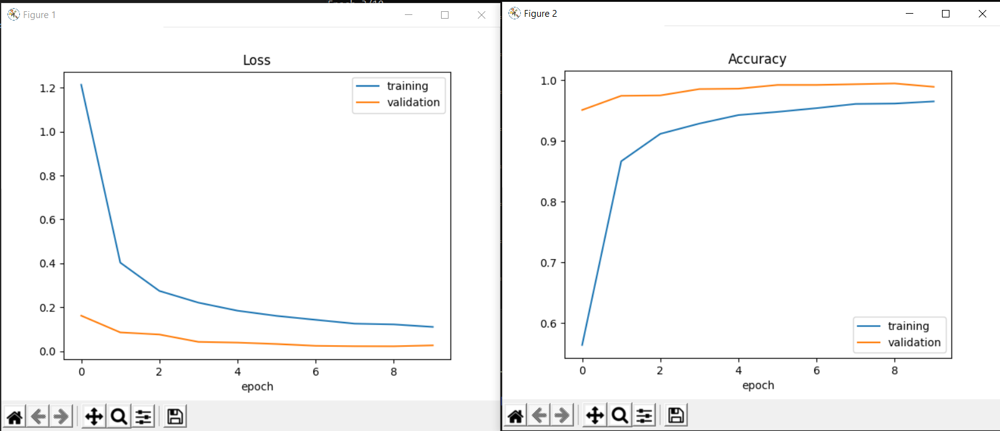

Sudoku is a logical based puzzle. Classically, Sudoku is of 9x9 grid, player insert number ranging from 1-9 such that each number appears only once in its horizontal, vertical lines and square(3x3) grid. To tackle this problem, we will be using backtracking algorithm. “Backtracking is an algorithmic-technique for solving problems recursively by trying to build a solution incrementally, one piece at a time, removing those solutions that fail to satisfy the constraints of the problem at any point of time (by time, here, is referred to the time elapsed till reaching any level of the search tree)”[Link]
First of all, an image of a Sudoku is taken irrespective to the angle. The name of the image, and dimension of Sudoku is given as an input. Using computer vision, image is read from the given path. Once the image is obtained, we preprocess the image, converting the given image into grayscale, removing noises and thresholding. Then, contours are determined, from which the outer lines of Sudoku is determined by getting the joint lines having 4 corners (that forms a square or rectangle). One major question may arise, if image is tilted how can we get the the normal square or rectangle shape. In order to achieve this, we will be using warp perspective method. Once the (x1, y1) and (x2, y2) co-ordinates are determined, perspective transformation is applied. The returned image after transformed is then divided into sub-images. Meaning, if we have 9x9 dimension Sudoku, we will split the given Sudoku into 81 sub-images, I.e., image containing number of each grid.
Second most important step is to convert the given Sudoku image into machine understandable format. In order to do so, we will training a sequential model to recognize the given number. For this, convolutional neural network is used. We will be using digit images from Char74k dataset. The model architecture is as follow:
| Model: Sequential | |||||||||||
|---|---|---|---|---|---|---|---|---|---|---|---|
| Layer (Type) | Output Shape | Param | |||||||||
| conv2d (Conv2D) | (None, 28, 28, 60) | 1560 | |||||||||
| conv2d_1 (Conv2D) | (None, 24, 24, 60) | 90060 | |||||||||
| max_pooling2d (MaxPooling2D) | (None, 12, 12, 60) | 0 | |||||||||
| conv2d_2 (Conv2D) | (None, 10, 10, 30) | 16230 | |||||||||
| conv2d_3 (Conv2D) | (None, 8, 8, 30) | 8130 | |||||||||
| max_pooling2d_1 (MaxPooling2D) | (None, 4, 4, 30) | 0 | |||||||||
| dropout (Dropout) | (None, 4, 4, 30) | 0 | |||||||||
| flatten (Flatten) | (None, 480) | 0 | |||||||||
| dense (Dense) | (None, 500) | 240500 | |||||||||
| dropout_1 (Dropout) | (None, 500) | 0 | |||||||||
| dense_1 (Dense) | (None, 10) | 5010 | |||||||||
| Total params: 361, 490 | |||||||||||
| Trainable params: 361, 490 | |||||||||||
| Non-trainable params: 0 | |||||||||||
The model accuracy was 0.96.
The 81 different images are then passed into the model to predict the number present within each grid The threshold for the digit recognition is set by user. Once all the numbers are predicted, it is stored in a 2D matrix, which is then fed to Sudoku solver. So, now each number of 2D list is processed. If the number is 0 then place a number ranging from 1-9 basically, we place 1 at first. Then check if the inserted number is present in its respective row, column or 3x3 grid. If not the move forward within the list till next 0 is found. Then repeat the same process. What if a number contradicts the rule of being unique number within the row, column or 3x3 grid. Then, backtrack the inserted number and increment the number, check again if the number is unique or not. Basically we insert a number, check for its existences, if unique then move forward and if not the increment the number till 9. If all process is completed then the Sudoku is solved and returns the solved Sudoku if not, then the Sudoku cannot be solved.